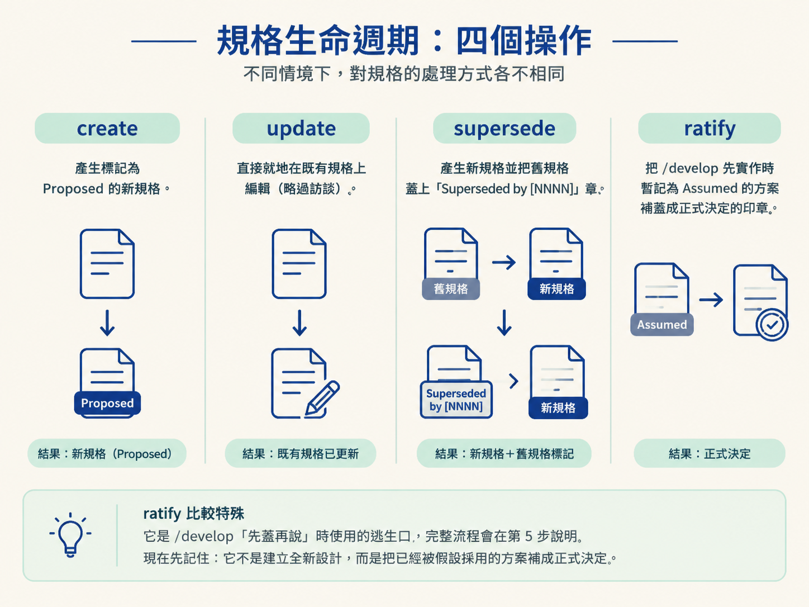
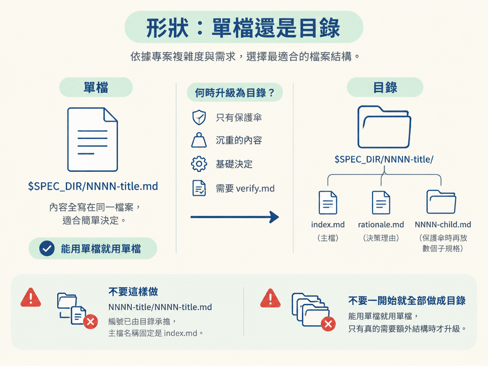

完成這一節後，你應該能說明 /architect 的角色與產物，並判斷一份 spec 要放在哪個 $SPEC_DIR、該採用單檔還是目錄，以及 create、update、supersede、ratify 各自適用的時機。
你對 AI 說：「幫我設計登入功能。」它可能馬上開始寫程式，順手替你決定用 cookie 存 session、選一套密碼雜湊演算法，再設定 token 的有效期限。當下看起來也許沒問題，但三週後資安人員問你「為什麼不用另一種做法」，你才發現，那個「為什麼」從來沒有被記錄，只存在當時的對話裡。
另一種失敗則剛好相反：AI 丟出二十題清單，一題一題問完。你回答得很累，最後卻沒有得到一個清楚的結論。問題雖然都問過了，答案卻沒有被收攏成一份可以照著蓋的東西。
/architect 要處理的，正是這個斷層。它把「決定」本身當成交付成果：陪你完成結構化探索，比較可行選項，提出明確推薦，再把確認過的結論寫成規格。這份規格是它存在的理由，也是下一個階段 /develop 動工時依循的依據。
這一節先不拆解訪談流程，而是先釐清三件基礎的事：/architect 產出什麼、產物放在哪裡，以及規格應該採用什麼形狀。
/architect 是用來處理「設計決定」的 skill。它會把模糊的請求，例如「設計 auth」、「挑一套技術棧」或「統一錯誤處理」，整理成一份經過確認的建置規格，預設放在 docs/specs/。
它的基本流程是：先進行結構化探索，再比較選項，提出一個清楚的推薦，最後由主執行緒把規格寫下來。換句話說，它處理的是一個需要被確認、記錄，並交給後續實作的技術決定。
它刻意不做幾件事。它不寫程式，也不更新 AGENTS.md 或 CLAUDE.md；這些工作屬於 /sync。/architect 的產物就是規格，以及支撐這份規格所需的佐證。
還有一條重要的分工：規格由主執行緒親手寫，subagent 只負責讀取與檢查。它會派出的幫手只有三種，而且全部是唯讀角色：閱讀既有程式碼的 scout、查詢現況的 researcher，以及最後閱讀草稿、進行交叉檢查的審查者。
這些 subagent 一律使用「最便宜且足以勝任」的模型，不會繼承你目前 session 使用的模型。這樣做有兩個原因。第一，規格是承重的產物，不應該把最後的寫作責任交給不可靠的幫手。第二，掃描程式碼與查詢資料通常會灌入大量內容，交給唯讀 subagent 處理，可以避免主對話的 context 被雜訊撐滿。
面對一個設計主題時，/architect 會先判斷應該採用哪一種操作。操作不同，後續流程也不同。
| 操作 | 什麼時候使用 | 會做什麼 |
|---|---|---|
| create | 要處理一個全新的決定 | 建立一份新規格，狀態從 Proposed 開始 |
| update | 同一個決定需要繼續演化 | 直接編輯既有規格，跳過設計訪談 |
| supersede | 新的決定要取代過去的決定 | 建立新規格，並把舊規格標成 Superseded by [NNNN] |
| ratify | 要把一份 Assumed 規格補成正式決定 | 把 /develop 先實作、後決定的假設正式確認下來 |
ratify 比較特殊。它是 /develop「先蓋再說」時使用的逃生口，完整流程會在第 5 步說明。現在先記住：它不是建立全新設計，而是把已經被假設採用的方案補成正式決定。

正式開始前，pre-flight 會先掃描既有規格，找出內容明顯重疊的項目。它不會自行替你決定，而是先詢問：這次要建立新決定、直接更新既有規格，還是取代舊規格？預設選項會根據重疊程度提出建議。幾乎相同的內容，通常偏向更新或取代；只有鄰近但仍然獨立的主題，才偏向建立新規格。
所有 spec 檔都只能由 /architect 建立或更新。它產生的佐證，例如現況清單與審查紀錄，也有固定位置：目錄形狀的規格放進 rationale.md，單檔規格則直接寫在同一個檔案中。
這些內容不會散落到 docs/scope/，因為那是 /scope 的工作範圍。每個 skill 都有自己的地盤，避免同一份決定被不同流程各自保存，最後變成兩份互相打架的版本。
規格的實際落點，取決於 repo 的形狀：
| Repo 形狀 | 規格落點 |
|---|---|
| 單一 repo | docs/specs/ |
| Monorepo，某個 workspace 的決定 | docs/specs/<workspace>/ |
| Monorepo，repo 層級的決定 | docs/specs/_root/ |
編號是以位置為單位分開計算的。系統會掃描該目錄中最大的 NNNN，再加一並補成四位數。解析出來的規格目錄，就稱為 $SPEC_DIR；後續建立檔案時，都以它作為基準。
規格預設放在 docs/ 底下。不過，如果 docs/ 本身是要發布出去的說明網站，例如偵測到 Docusaurus、VitePress、MkDocs、Starlight 或 Nextra，規格就會改放到 .workflow/。這樣工作檔案不會混進公開內容，像把施工材料放進工地後方，而不是堆在展示間裡。
規格的落點與規格的形狀，是兩個獨立的選擇。落點回答「放在哪裡」，形狀則回答「要用多大的容器保存這個決定」。判斷依據是這個決定本身有多大。
簡單的決定使用單一檔案：$SPEC_DIR/NNNN-title.md，所有內容直接寫在檔案裡。遇到以下情況，才使用目錄形狀：
verify.md。目錄形狀會是 $SPEC_DIR/NNNN-title/，裡面至少放一個作為主檔的 index.md，以及一個記錄決策理由的 rationale.md。如果是保護傘規格，還可以再放入數個子規格，例如 NNNN-child.md。
有兩個常見錯誤要避開。第一，不要建立 NNNN-title/NNNN-title.md；編號已經由目錄承擔，主檔名稱固定是 index.md。第二，不要一開始就把所有東西做成目錄。能用單檔就用單檔，只有真的需要額外結構時才升級。

檔名使用 kebab-case，全小寫，最多五個字，開頭不加冠詞。例如 0001-adopt-relational-db-for-primary-storage.md，這個名稱清楚表達「採用關聯式資料庫作為主要儲存」，而不是塞進一串又長又模糊的描述。
在目錄形狀中，index.md 是給 /develop 讀的建置規格；rationale.md 則是給人閱讀的決策記錄。
這樣拆開，是因為一份規格同時服務兩種受眾。/develop 需要知道要建什麼，不一定需要重新讀完所有比較過程與取捨理由。把兩者分開後，實作時只載入 index.md，不用讓完整推理過程一直佔據 context。
這和整個 skill 的設計方式是同一套思路。頂層的 SKILL.md 只負責協調，冗長的操作細節放在 internal/ 底下；像寫作指南這類只在真正寫入規格時才需要的內容，也等到那個時刻才讀取。
這種「需要時才載入」的方式叫做 progressive disclosure。它能避免 context 長期躺著一堆目前用不到的資料，讓主對話保留足夠空間處理真正的設計決定。你在 Tier 1 已經看過這個概念，現在看到的是它在一個真實 skill 裡的落地方式。
/architect是處理設計決定的 skill，產物是一份規格，通常放進docs/specs/。規格由主執行緒親手寫，subagent 只負責唯讀探索與檢查，並使用最便宜且足以勝任的模型。四個操作分別是：create 建立新規格、update 就地演化、supersede 取代舊決定、ratify 把Assumed補成正式決定。規格落點由 repo 形狀決定：單一 repo、monorepo workspace，或 repo 層級的_root；編號在每個位置各自計算，解析出的目錄稱為$SPEC_DIR。規格預設採單檔，只有保護傘、沉重或基礎決定，或需要verify.md時，才升級成目錄，並拆成index.md與rationale.md。
現在你已經知道規格會放在哪裡、要長什麼樣子。下一節會把規格本身拆開，看看它的段落順序、兩種受眾各自需要讀哪些內容，以及如何用 AC 主線把整份規格串起來。